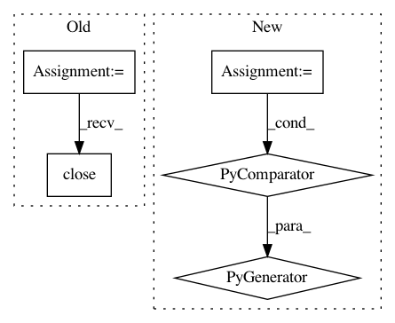

55a0700a659abde74acd0972922ef563c30e8e2c,pynets/plotting/plot_graphs.py,,plot_community_conn_mat,#Any#Any#Any#Any#Any#Any#,90
Before Change
" from runconfig.yaml"
)
sys.exit(1)
stream.close()
labels = [i[0][labeling_atlas] for i in labels]
except BaseException:
pass
After Change
)
sys.exit(1)
if any(isinstance(sub, dict) for sub in labels):
labels = [i[0][labeling_atlas] for i in labels]
sorting_array = sorted(
In pattern: SUPERPATTERN
Frequency: 3
Non-data size: 5
Instances
Project Name: dPys/PyNets
Commit Name: 55a0700a659abde74acd0972922ef563c30e8e2c
Time: 2020-10-26
Author: dpisner@utexas.edu
File Name: pynets/plotting/plot_graphs.py
Class Name:
Method Name: plot_community_conn_mat
Project Name: theislab/scanpy
Commit Name: d69aa1862f77db07d8aee64303fa6576701850af
Time: 2021-03-03
Author: ivirshup@gmail.com
File Name: scanpy/preprocessing/_simple.py
Class Name:
Method Name: regress_out
Project Name: dPys/PyNets
Commit Name: 55a0700a659abde74acd0972922ef563c30e8e2c
Time: 2020-10-26
Author: dpisner@utexas.edu
File Name: pynets/plotting/plot_graphs.py
Class Name:
Method Name: plot_conn_mat